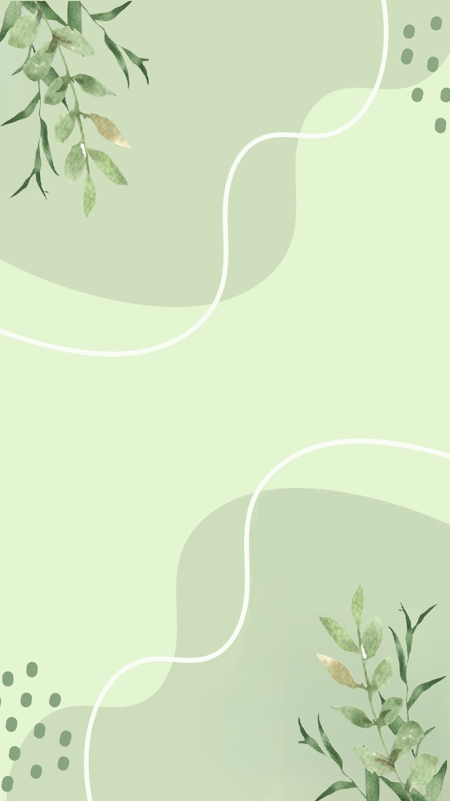

1
Gợi ý: Làm tương tự demo đã học trên lớp
2
3
Gợi ý: Làm tương tự demo Sinh Vien đã học trên lớp
4
Gợi ý:
5
6
7
8
Gợi ý: Khi tìm thấy số nguyên tố đầu tiên thì dùng lệnh dừng vòng lặp (break) để không duyệt những số tiếp theo trong mảng
9
Gợi ý: Sử dụng Number.isInteger để kiểm tra số nguyên
10
Gợi ý: Đếm số lượng sô âm và số dương. Sau đó so sánh số lượng của 2 loại